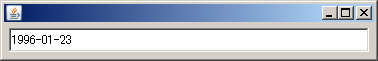
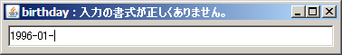

S2Swing
S2Swing
S2Swing
S2Swing
このページの内容に対応するソースコードは、s2swing-tutorialアーカイブのconverterパッケージ以下にあります。
S2Swingでは、@DateToStringや@NumberToStringといったコンバータアノテーションを使うことで、モデルオブジェクトの値を整形してUIコンポーネントに表示したり、 逆にコンポーネントの入力を適切に変換してモデルオブジェクトへ代入することができます。
S2Swingでは、基本的に次のような流れで変換を記述します。
上記の流れを具体的に見ていきましょう。例として、誕生日の日付を"yyyy-MM-dd"の書式でテキストフィールドにバインディングする場合を考えます。 このような書式付き入力はJFormattedTextFieldでも実現できますが、S2Swingのコンバータ機構を使用すれば、よりスマートに記述が可能です。
以下のように、Birthクラスを作成します。
package converter;
import java.io.Serializable;
import java.util.Date;
import org.seasar.swing.converter.annotation.DateToString;
import org.seasar.swing.converter.annotation.DateToString.DateFormatType;
public class Birth implements Serializable {
private static final long serialVersionUID = 1L;
@DateToString(type = DateFormatType.CUSTOM, pattern = "yyyy-MM-dd")
private Date birthday;
public Date getBirthday() {
return birthday;
}
public void setBirthday(Date birthday) {
this.birthday = birthday;
}
}
@DateToStringアノテーションを使い、birthdayプロパティのカスタム書式として"yyyy-MM-dd"を指定しています。 なお、アノテーションの位置は、フィールド、getter、setterのいずれでも認識されます。
次に、誕生日の入力画面となるConverterUsageFrameクラスを作りましょう。
package converter;
import java.awt.Container;
import java.awt.Dimension;
import java.awt.FlowLayout;
import java.util.GregorianCalendar;
import javax.swing.JTextField;
import org.seasar.swing.beans.ObservableBeans;
import org.seasar.swing.binding.Binder;
import org.seasar.swing.binding.BindingStateEvent;
import org.seasar.swing.binding.BindingStateListener;
import org.seasar.swing.component.S2Frame;
public class ConverterUsageFrame extends S2Frame {
private static final long serialVersionUID = 1L;
private JTextField textField = new JTextField();
private Birth birth;
public void initialize() {
setDefaultCloseOperation(EXIT_ON_CLOSE);
textField.setPreferredSize(new Dimension(360, 24));
Container c = getContentPane();
c.setLayout(new FlowLayout());
c.add(textField);
birth = ObservableBeans.create(Birth.class);
birth.setBirthday(new GregorianCalendar(1996, 0, 23).getTime());
Binder binder = new Binder();
binder.add(birth, "birthday", textField, "text");
binder.addBindingStateListener(new BindingStateListener() {
public void bindingStateChanged(BindingStateEvent e) {
setTitle(e.getSimpleErrorMessage());
}
});
binder.bind();
}
}
このコードのように、変換は通常、バインディングとセットで行われます。ちなみに、31行目で誕生日の初期値としている1996年1月23日は、JDK 1.0のリリース日です。
バインディングのソースプロパティ（birth.birthday）が変更されると、ただちに正方向の変換（Date → String）が行われて、ターゲットプロパティ（textField.text）に代入されます。 また、ターゲットプロパティが変更されると、ただちに逆方向の変換（String → Date）が行われて、ソースプロパティに代入されます。 変換が失敗した場合、プロパティの更新は行われません。
この変換の結果は、BindingStateEvent型のイベントとしてリスナーへ通知されます。 36行目からは、変換が失敗した場合のエラーメッセージをフレームのタイトルに表示するよう、BindingStateEventのイベントハンドラを記述しています。
それでは、アプリケーションを実行してみましょう。初期状態で「1996-01-23」と、指定した書式通りに日付が表示されていますね。

テキストフィールドの入力を変更して、フレームタイトルがどう変化するか観察してみてください。 不正な書式の場合は、「birthday : 入力の書式が正しくありません。」とエラーが表示されることが確認できます。
